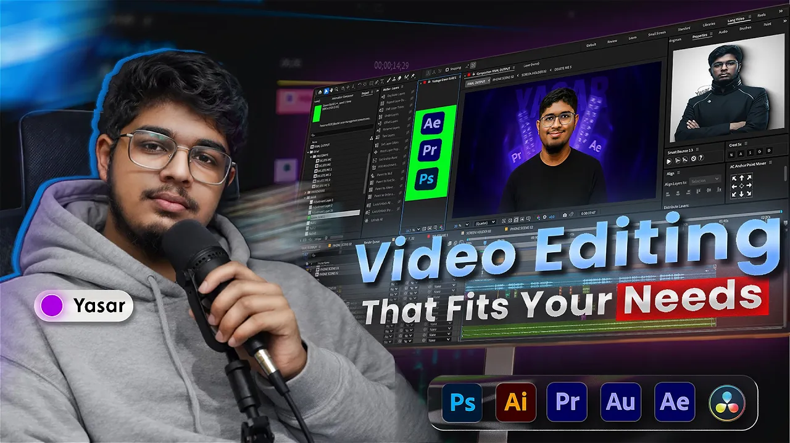
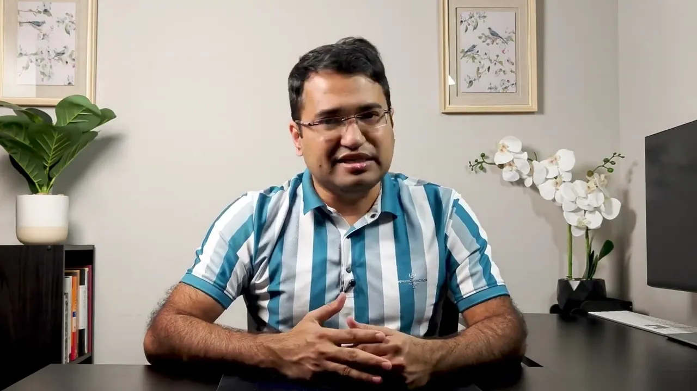
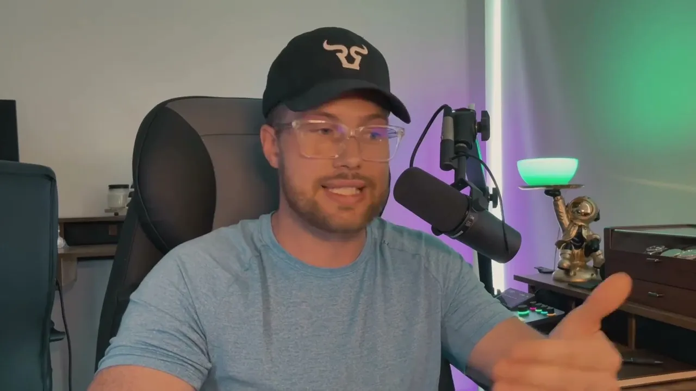
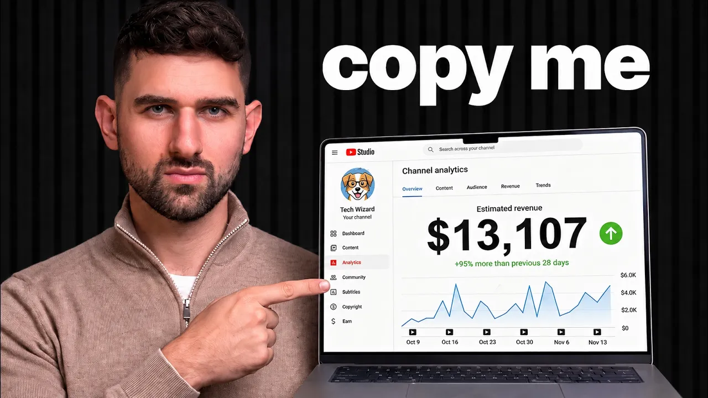
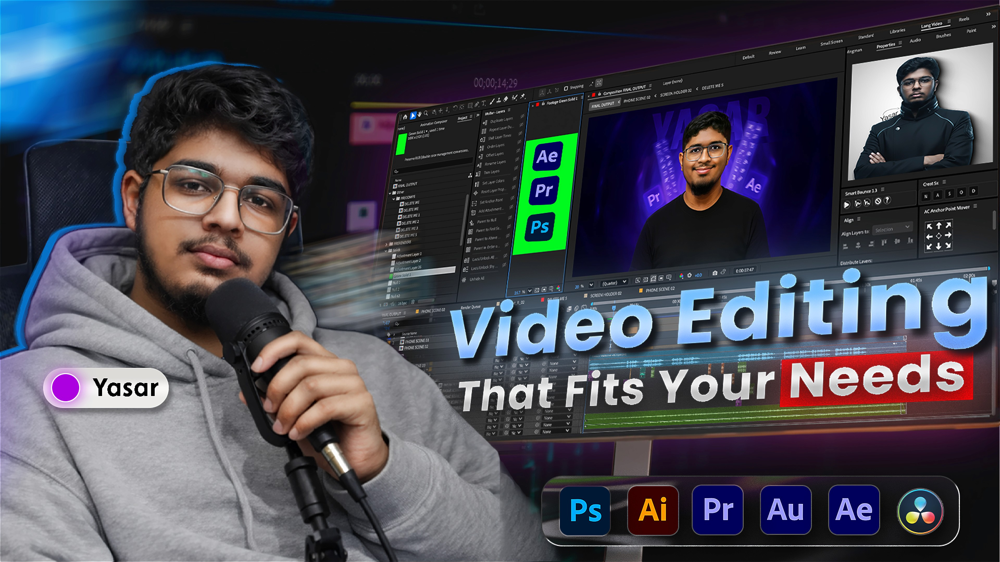
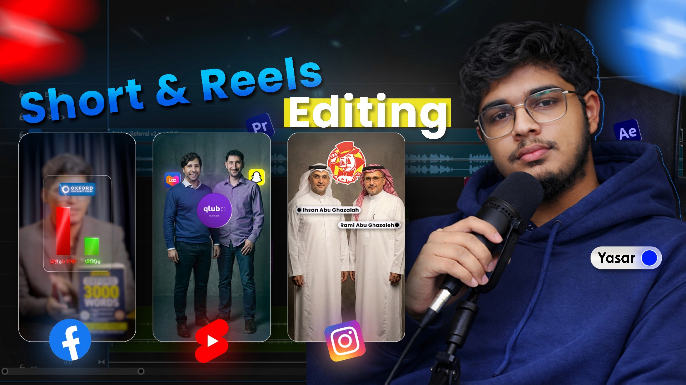
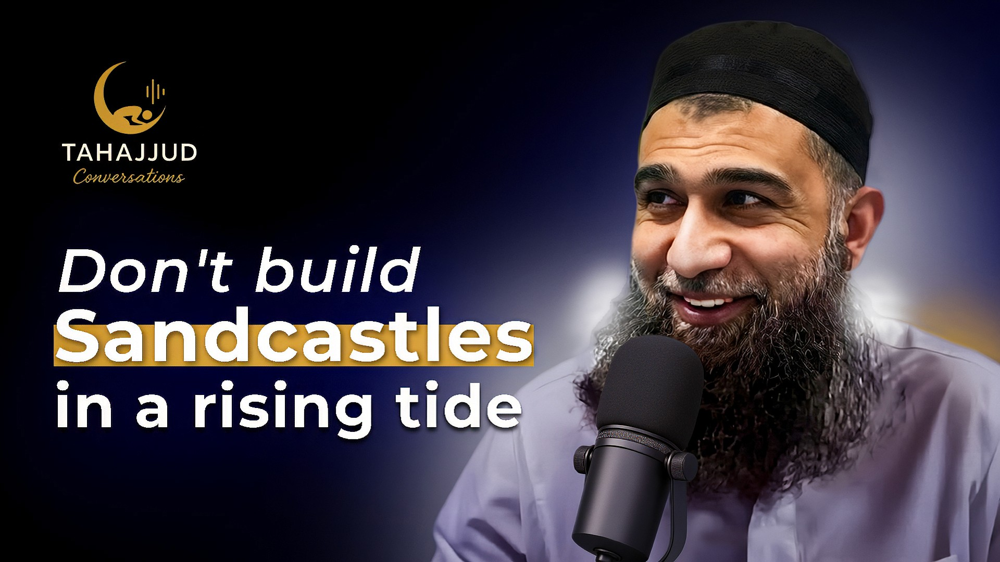

01 — YOUTUBE
Story · Rhythm · Polish INDEPENDENT VIDEO EDITOR / WORKING WORLDWIDE
Make every
second count.
I turn raw footage into videos people choose to keep watching. Thoughtful edits for creators and brands building something worth paying attention to.
Y✳▶
Story-first edits. Every frame with intent.

EDIT / 001
FEATURED WORKStories with a pulse.
16:9 • 4KTHE DETAILSEvery cut has a reason.
CRAFTED INPremiere · After Effects
01 / 04
LONG-FORM STORYTELLING✳SHORT-FORM THAT STOPS THE SCROLL✳MOTION WITH MEANING✳SOUND THAT PULLS YOU IN✳LONG-FORM STORYTELLING✳SHORT-FORM THAT STOPS THE SCROLL✳MOTION WITH MEANING✳
01 THE PORTFOLIO
Selected work.
Different formats. Different stories.
One goal: make people feel something.
02 THE THINKING
Good editing is
felt.
A few ways I shape a raw recording into
something worth staying for.
EDIT BREAKDOWN / 01YOUTUBE ↗

▶
LONG-FORM STORYTELLING
From raw take
to clear narrative.
Find the through-line. Trim the dead air. Use B-roll, sound, and motion to make each idea land with more clarity.
EDIT BREAKDOWN / 02SHORT-FORM ↗

▶
“Here’s the part most people miss…”
SHORT-FORM RETENTION
Earn attention
in the first frame.
Open on a specific idea, keep the visual rhythm moving, and let captions and punch-ins support—not compete with—the message.
EDIT BREAKDOWN / 03BRAND CONTENT ↗

▶
POLISH & FINISH
Make every layer
feel intentional.
Consistent color, considered transitions, and a designed soundscape make a video feel like it belongs to the brand.
These breakdowns describe my editing approach. Video thumbnails open the original portfolio samples.
03 FORMAT FLEX
One editor.
Every cut.
From an in-depth YouTube story to
a vertical clip made to travel.
01 / 02Room to
LONG-FORM VIDEO
Room to
tell the story.
Watchable pacing, purposeful B-roll, and a visual language that feels like you.
Explore long-form ↗02 / 02Made to
SHORT-FORM VIDEO
Made to
make them pause.
Vertical edits with a sharp opening, readable captions, and momentum all the way through.
Explore short-form ↗04 VERTICAL, BY DESIGN
Small screen.
Big presence.
Short-form work built around the message,
not the trend of the week.
05 THE FIRST IMPRESSION
Thumbnails that
open a loop.
Clear idea. Strong contrast.
A reason to click.

YOUTUBE THUMBNAIL DESIGN 01
CONCEPT / 02
CONCEPT / 03CONCEPT / 04
07 WHAT I DO
Everything the
story needs.
One creative partner across the
whole edit—not just the timeline.
Long-form editing
YouTube videos, interviews, explainers, and brand stories shaped into clear, watchable narratives.
Short-form editing
Reels, Shorts, and TikToks with strong hooks, designed captions, and natural momentum.
Motion graphics
Useful visual explanations, animated titles, and details that give the story more shape.
Sound & color
Clean dialogue, layered sound, and consistent color that make the final video feel finished.
Thumbnails
Readable, scroll-stopping thumbnail concepts designed to make the video’s promise clear.
PrAePs
Made with intention.
Adobe Premiere Pro, After Effects, and Photoshop—used to serve the idea, not decorate it.
YASAR
VIDEO EDITOR
VIDEO EDITOR
CREATIVE PARTNER · DHAKA, BD
08 A LITTLE ABOUT ME
Good stories
deserve good edits.
I’m Yasar, an independent video editor working with creators and brands around the world. I bring structure to raw footage and give ideas the pacing, sound, and visual care they need to connect.
My favorite part is finding the edit that makes a message feel effortless—the beat that lands, the pause that matters, the detail you didn’t notice but would miss.
FOCUSCreator-led stories
BASED INDhaka, Bangladesh
WORKING WITHClients worldwide
YOUR NEXT VIDEO STARTS HERE
Have footage.
Have a story?
Let’s make something people want to finish—and remember.
LET’S MAKE IT
MATTER ✳
MATTER ✳